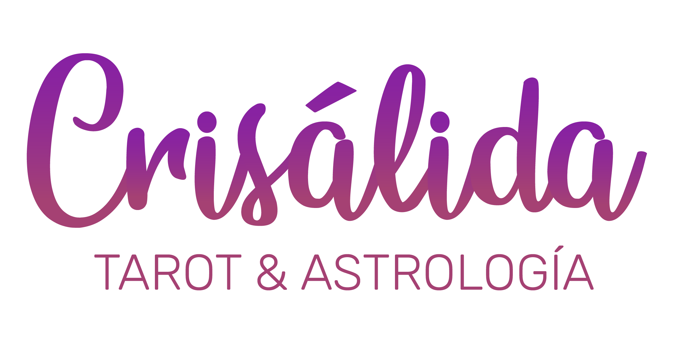
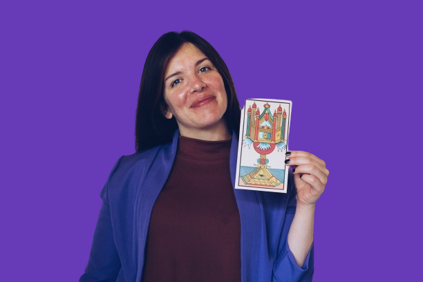

Crisálida es un espacio donde integrás Tarot, Astrología, Psicología y Filosofía para interpretarte, reconocerte y tomar decisiones con mayor claridad.
Más de 1500 alumnos formados desde 2016

Estás en un momento de cambio, querés entenderte más profundamente y buscás herramientas reales, no información suelta.
Hay cosas que te están pasando y sentís que necesitás comprenderlas desde un nivel más profundo.
Te interesa el Tarot y la Astrología, pero no desde lo superficial, sino como caminos reales de interpretación.
No querés quedarte atrapado en la confusión. Querés reconocer patrones, tomar decisiones y evolucionar.
No es un curso aislado. Es una experiencia de formación y transformación personal.
Esto no nace de cero. Hay años de formación, grupos, encuentros, certificados y personas transitando este camino.
Entrás a un espacio vivo de aprendizaje y evolución.
Base, fundamentos, estructura del Tarot y primeros pasos de interpretación.
Profundización, criterio de lectura y ampliación del enfoque simbólico.
Integración avanzada, comprensión más profunda y aplicación del Tarot en la vida real.
Primer acercamiento a la astrología como herramienta de autoconocimiento.
No se trata solo de estudiar contenido. Se trata de comprender mejor tu vida.
Una inversión accesible para todo lo que incluye: formación, clases en vivo, material de estudio y un espacio de crecimiento real.
En valor percibido y aplicación práctica, es mucho más de lo que cuesta.
Acceso inmediato luego del pago
No. Está pensado para personas que quieren empezar y también para quienes buscan profundizar con criterio real.
No. El Tarot es una puerta, pero el espacio integra también astrología, psicología, filosofía y autoconocimiento.
Sí. La propuesta incluye clases en vivo y un espacio que puede seguir creciendo con nuevos contenidos y recursos.
No del todo. Ya hay material real y una base sólida, pero la visión es que Crisálida siga expandiéndose como plataforma viva.
Si sentís que estás en un momento donde necesitás entender lo que te pasa, este espacio puede ser el comienzo de una nueva etapa.
Quiero entrar a Crisálida